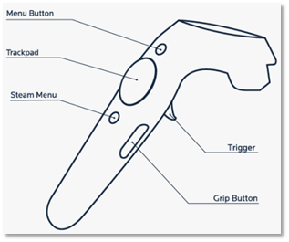
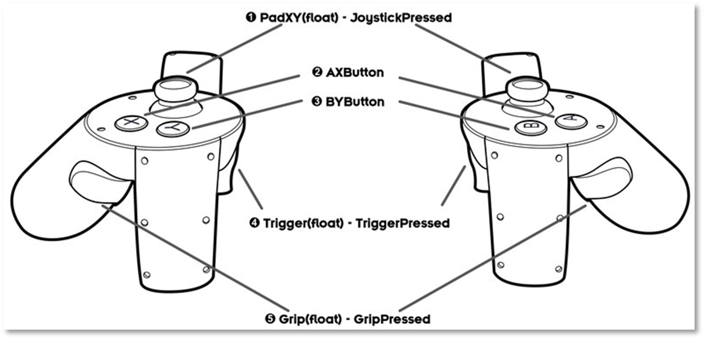

Default Input Device Mapping for Virtual Controller
Virtual Controller Button and Axis Index Mapping for Common Input Devices
In VotanicXR, input devices will automatically assign and bind to VotanicXR Virtual Controller by default. For a consistent user experience, VotanicXR has re-mapped the buttons / axes on common XR input device's buttons and axes will map to the Virtual Controller's buttons and axes. controllers to the virtual controller button / axis indexes so that the controllers can be used in the most natural way across all supported common devices. VotanicXR has pre-mapped 5 common devices, namely Xbox controller, HTC VIVE (Pro), Valve Index, Oculus Rift, and Samsung Odyssey+, to Virtual Controller button and axis. The mapping of button and axis for those input devices are shown in the below table.
Those Virtual Controller button and axis could be used to triggering VotanicXR Commands. For details, please check the Getting Cross-platform Input tutorial section.
Table of Virtual Controller Button to Common Input Devices
| Button | Xbox | HTC VIVE | Valve Index | Oculus Rift | Samsung Odyssey+ |
| 0 | A | Trigger | Trigger | Trigger | Trigger |
| 1 | B | Grip | Grip | Grip | Grip |
| 2 | Y | Menu | A | A / X | Menu |
| 3 | X | TouchPad (Trackpad) | TouchPad (Trackpad) | B / Y | TouchPad (Trackpad) |
| 4 | LB (Left Bumper) | B | Joystick (Thumbstick) | Joystick (Thumbstick) | |
| 5 | RB (Right Bumper) | Joystick (Thumbstick) | |||
| 6 | Back | ||||
| 7 | Start | ||||
| 8 | LS (Left Stick) | ||||
| 9 | RS (Right Stick) | ||||
| 10 | Left (DPad Left) | ||||
| 11 | Right (DPad Right) | ||||
| 12 | Up (DPad Up) | ||||
| 13 | Down (DPad Down) |
Table of Virtual Controller Axis to Common Input Devices
| Virtual Controller Axis Index | Xbox | HTC VIVE / VIVE Pro | Valve Index | Oculus Rift | Samsung Odyssey+ |
| 0 | LX (Left Stick Horizontal) | TPX (Trackpad Horizontal) |
JX (Joystick Horizontal) | JX (Joystick Horizontal) | TPX (TouchPad Horizontal) |
| 1 | LY (Left Stick Vertical) | TPY (Trackpad Vertical) |
JY (Joystick Vertical) | JY (Joystick Vertical) | TPY (TouchPad Vertical) |
| 2 | RT (Right Trigger) / LT (Left Trigger) | ||||
| 3 | RX (Right Stick Horizontal) | TPX (Trackpad Horizontal) |
JX (Joystick Horizontal) | ||
| 4 | RY (Right Stick Vertical) | TPY (Trackpad Vertical) |
JY (Joystick Vertical) | ||
| 5 | LT (Left Trigger) / RT (Right Trigger) | ||||
| 6 | DX (DPad Horizontal) | Trigger | Trigger | Trigger | Trigger |
| 7 | DY (DPad Vertical) | Middle (Finger Tracking) |
|||
| 8 | Ring (Finger Tracking) |
||||
| 9 | Pinky (Finger Tracking) |
||||
| 10 | Track pad Force | ||||
| 11 | Grip Force | ||||

| 
|
| Xbox Controller | Samsung Odyssey+ |
|  | 
|
| HTC VIVE / VIVE Pro | Valve Index |
|  | |
| Oculus Rift | |
Creating a Virtual Controller for Other Input Devices
Aside from the 5 pre-mapped input devices, there is not a re-mapping between the physical device's raw input index and the virtual controller indexes. Therefore, it is necessary to test those devices' button and axis indexes first, and then assign them to the appropriate VotanicXR Command trigger. For a device that's not in our natively supported controller list introduced above, we recommend that you create a new Virtual Controller and manually bind the input device to this new Virtual Controller, then obtain the button and axis index for creating triggers in the VotanicXR Command system. This section introduces the steps in this process. An PS4 controller is used for demonstration.
Ensure the input device is connected to the PC and open the application setting file which can be obtained from
Setting Pathproperty invGearSDK manager. You can navigate to the folder path and double click to open the file with VotanicXR Configurator.Click the
Controllerstab. Virtual controllers are listed on theControllerslist. Then click+button on theControllerslist to create a new virtual controller for the new input device. Note: it is recommended not to delete the default virtual controllers (controller[0] and controller[1]) as a lot of built-in commands are bound to these virtual controllers.You should start by creating a new controller with index 2.
In the new controller item, disable
Auto Find Buttons (If no buttons bound)andAuto Find Axes (If no axes bound)property. Then clickTest and Bindbutton.In the
Virtual Controller Binding Testdialog, clickSelectbutton to open the system config file to continue. The system config file can be obtained fromConfig Pathproperty invGearSDK manager. Then, select the corresponding input device Buttons and Axes in theAvailable Devicesection. In this demonstration, the PS4 controller is showed asWireless Controller ButtonsandWireless Controller Axes.After selecting the input device, you can test the virtual controller and get the button and axis index in the
Virtual Controller Statussection. It is required to use the button and axis index for setting the commands.If the testing is completed, click the
Blindbutton, and close the dialog.If you click the
Bindbutton in the previous step, the device name will be automatically filled into theBind ButtonsandBind Axesproperty. In this setting, the PS4 controller will be bound toController2if available, otherwise, this controller will remain unassigned. Finally, remember to clickFile -> Saveto save the configuration.(Optional) this step is to demonstrate assign the new virtual controller to
Triggercommand.First, in the
Commandstab, select theTriggercommand in theBuilt-in Commandslist.Second, click
+button to create a new Trigger.Third, input the new created virtual controller index in the
Input Controllerproperty. Then select a proper input type inTypeproperty and input related virtual controller button or axis index, which is obtained in the step 4, in theIndexproperty. Repeat this step forMenuandGrabcommands, which are the three basic commands for VotanicXR, and other commands used in the application and remember to save the configuration.